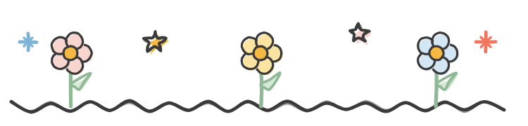
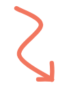
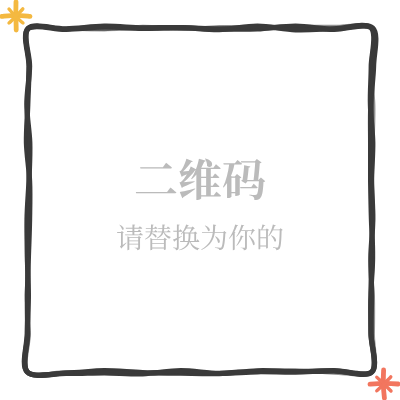

你有沒有過這樣的時刻？
心跳加速，手心出汗，腦子裡全是「萬一搞砸了怎麼辦」，可你還是深吸一口氣，推門進去、開口說話、按下發送鍵。
事後回想，你會發現：那一刻的你，並沒有變得無所畏懼。你只是帶著害怕，做了那件事。
這，就是真正的勇氣。
很多人以為勇氣是「不害怕」。心理學卻告訴我們：恰恰相反。
勇氣，其實是一場內部談判
當代心理學對勇氣的定義很清晰：
在感知到真實風險的情況下，自願採取行動，去追求一個對自己有意義的目標。
它不是情緒的缺失，而是一場大腦裡的「接近-回避衝突」。
|
一邊是杏仁核發出的警報：危險！快跑！保護自己！ |
另一邊是前額葉和扣帶回在權衡：這件事的意義夠不夠大？我有沒有能力應對？如果我不做，我會成為怎樣的人？ |
當「意義」和「自我效能」最終壓過恐懼時，勇氣就發生了。
2010年有一個經典實驗：研究人員找來怕蛇的人，讓他們在核磁共振儀器裡，自己決定是否把一條真蛇慢慢拉近頭部。
結果發現，那些選擇「前進」的人，大腦裡有一個區域特別活躍——膝下前扣帶回皮層。它像是在努力壓制杏仁核的恐懼信號。同時，多巴胺系統被激活，推動身體做出接近行為。
簡單說：勇氣不是消滅恐懼，而是讓前額葉成功「接管」了控制權。
為什麼有些人更容易勇敢？
心理學研究發現，勇氣並非完全天生，它受到幾個關鍵因素影響：
當你把一件事和核心價值觀、身份認同綁在一起時，風險會變得「可接受」。比如「我不能袖手旁觀」「這關乎我是誰」。
班杜拉說的「我相信自己能應對」。過去的小成功會累積這種信念。
真正勇敢的人，往往不是壓抑恐懼，而是允許它存在，然後把注意力重新聚焦到目標上。這叫「認知重評」。
有些人面對挑戰時，更容易啟動「接近動機」，而不是凍結或逃跑。
這也解釋了為什麼同一個人，在某個領域可以非常勇敢，在另一個領域卻縮手縮腳——勇氣高度依賴情境和意義。
勇氣是可以訓練的
好消息是：大腦有可塑性。
每一次你選擇「帶著害怕行動」，都在強化前額葉對杏仁核的調控通路。就像肌肉一樣，用得越多，越強壯。
可以從很小的事開始：
| 主動跟陌生人打個招呼 | |
| 在會議上說出不同意見 | |
| 把一直拖著的那封郵件發出去 | |
| 承認「我害怕，但我還是要做」 |
這些微小的接近行為，會一點點重塑你的神經迴路，讓下一次的害怕，變得不那麼壓倒性。
寫在最後
真正的勇敢，從來不是沒有恐懼。
它是明明知道風險，明明感到害怕，卻仍然判斷：有些事情，比害怕更重要。
下次當你心跳加速、想要退縮的時候，不妨輕輕提醒自己：
「我不是在消滅恐懼，我只是在選擇，讓意義走在前面。」
你已經比自己想像的，更有勇氣了。

如果這篇文字觸動了你，點個「在看」，讓更多人看見


長按識別二維碼，關注【公眾號名稱】